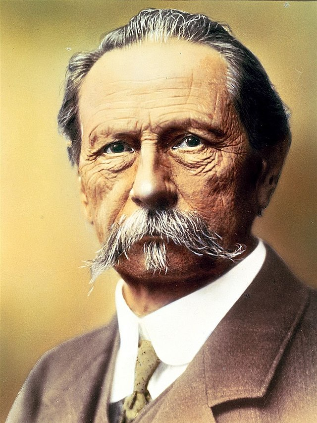

n 1871, at the age of twenty-seven, Benz joined August Ritter, in launching the Iron Foundry and Mechanical Workshop in Mannheim, later renamed Factory for Machines for Sheet-metal Working.[11] The enterprise's first year went very badly. Ritter turned out to be unreliable, and the business's tools were impounded. The difficulty was overcome when Benz's fiancée, Bertha Ringer, bought out Ritter's share in the company, using her dowry.[11][12] On 20 July 1872,[13] Benz and Bertha Ringer married. They had five children: Eugen (1873), Richard (1874), Clara (1877), Thilde (1882), and Ellen (1890). Despite the business misfortunes, Benz led in the development of new engines in the early factory he and his wife owned. To get more revenue, in 1878 he began to work on new patents. First, he concentrated on creating a reliable petrol two-stroke engine. Benz finished his two-stroke engine on 31 December 1879, and was granted a patent for it on 28 June 1880. While designing what would become the production standard for his two-stroke engine, Benz patented the speed regulation system, the ignition using sparks with battery, the spark plug, the carburetor, the clutch, the gear shift, and the water radiator. Benz's Gasmotoren-Fabrik Mannheim (1882–1883) Problems arose again when the banks at Mannheim demanded that the Benz's enterprise be incorporated due to the high production costs it maintained. They were forced to improvise an association with photographer Emil Bühler and his brother (a cheese merchant), to get additional bank support. The company became the joint-stock company Gasmotoren Fabrik Mannheim in 1882. After all the necessary incorporation agreements, Benz was unhappy because he was left with merely five percent of the shares and a modest position as director. Worst of all, his ideas weren't considered when designing new products, so he withdrew from that corporation just one year later, in 1883. Benz and Cie. and the Benz Patent-Motorwagen
